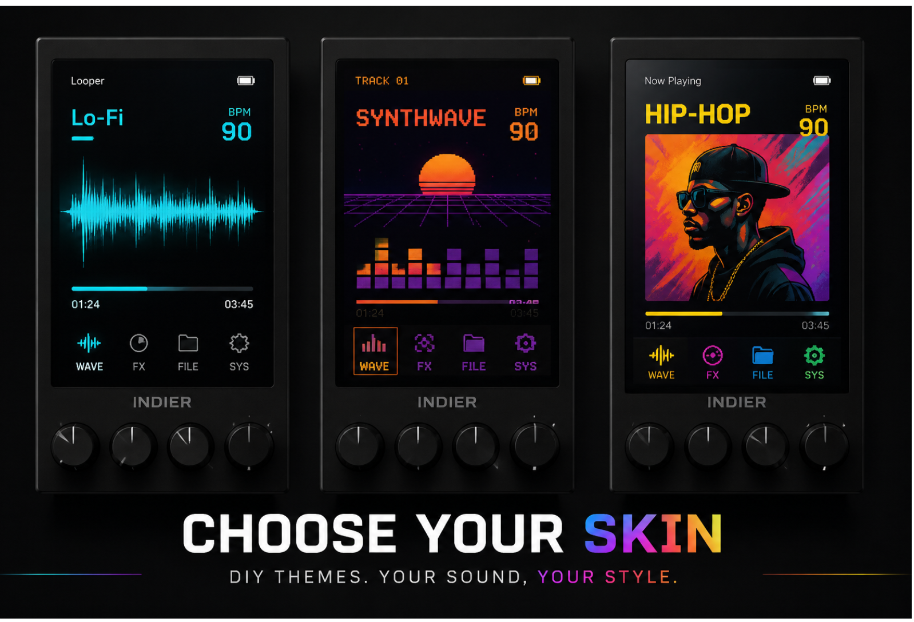

Core Display
Vertical screen showing waveforms, generation status, version history and current parameters.
- Role
- Brain / Timeline
- Surface
- Glass + Aluminum
INDIER Creator 01
A modular console for AI music creation. Snap modules like puzzle pieces, choose your skin, dial your sound — from zero to song in five turns.

Modular System

Vertical screen showing waveforms, generation status, version history and current parameters.
Knob module with ring-light feedback for style, mood, rhythm and tone weight.
Long-throw fader for energy, mix ratio and generation intensity.
Hot-swap mechanical key triggers Jam, Retry, Release.
Choose Your Skin
Every module snaps together like puzzle pieces — and every screen is a canvas. Pick Lo-Fi chill, Synthwave fire, HIP-HOP grit, or design your own. Same hardware, infinite personalities. That's modularity that shows.

Design your own visual theme. Your music, your look.
Core + Spin + Slide + Key. Mix modules like puzzle pieces.
Real knobs, real faders, real keys. Not sliders on a screen.
Try It Now
Made with INDIER
Make It Yours

Pre-order Packages
Core + Key. The minimum viable "press to generate" experience.
Core + Spin + Slide + Key. Complete console with knobs, faders, keys — for deep creation and video showcases.